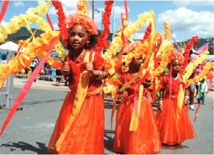

Caribbean colour and sound
The region’s largest carnival, shaped by resistance, cultural exchange and music.
It’s the largest of all Caribbean carnivals, with 300,000 people on the streets in some of the most incredible costumes you’re ever likely to see. Carnival here dates back to the 19th century, when freed slaves adopted the European festival and made it their own through music and characters like ‘Dame Lorraine’, which caricatured posh people of that time. In the past, calypso musicians sang from the floats in the parade, but these days, you’re more likely to hear soca music and the songs of Lord Shorty blasting out from the sound systems. Soca is a mix of African and East Indian beats which reflects the island’s cultural mix; a mix that is also reflected in the popular carnival dish, doubles, a flatbread sandwich filled with vegetable curry.
Discuss paragraph 1
- Why do you think freed slaves adopted a European festival and made it their own?
- Can a caricature be both entertaining and a form of sharp social criticism?
- How do the African and East Indian beats reveal Trinidad’s cultural mix?
- Would music blasting out from sound systems improve the atmosphere for you, or make it overwhelming?
- What can traditional food, costumes and floats tell visitors about social divisions and shared identity?
When things have calmed down, Trinidad offers fantastic beaches and wildlife tours as well as cultural sites such as the Temple of the Sea. For the more adventurous, try scuba diving on the stunning reefs.
Discuss paragraph 2
- Would you prefer cultural sites or stunning reefs after an intense carnival?
- How can a destination tackle the tension between mass tourism and protecting a coral reef?
- What makes a sightseeing activity genuinely adventurous?
- Should a country be reliant on carnival tourism, or develop attractions elsewhere too?
- Which cultural site near your home deserves to grab the headlines?